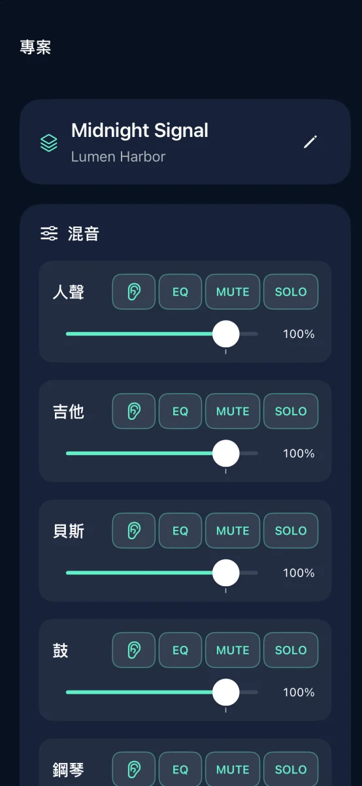
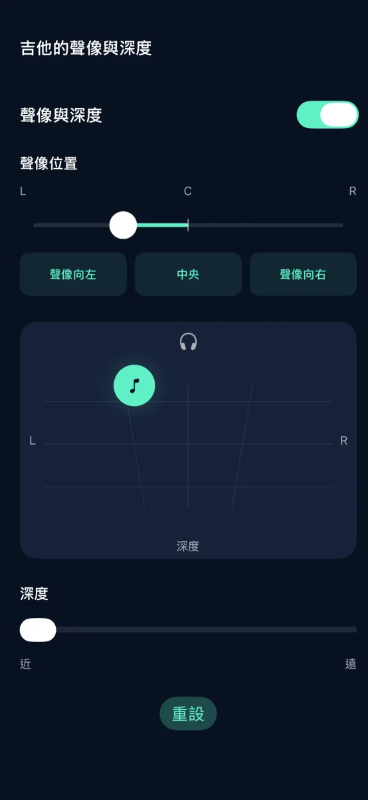
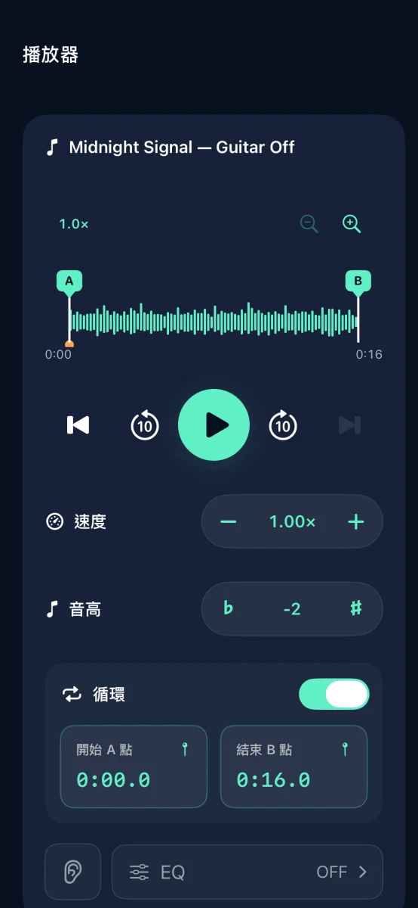

iPhone 音軌分離與音樂練習工具

把最愛的歌變成練習伴奏
將歌曲分離成六個音軌，靜音你要演奏的部分。
即將在 App Store 推出

功能



iPhone 音軌分離與音樂練習工具
音訊分離在裝置上執行，無須帳號。
調整各音軌的音量、靜音、獨奏、等化、聲像與深度。可匯出為 M4A、MP3 或 WAV。
可免費完成三次音源分離。一次買斷即可解鎖不限次數的分離。不需訂閱。
無法匯入串流曲目或受 DRM 保護的音訊。請使用你有權使用的音訊。
說明與支援 ↗